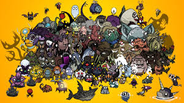
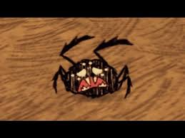
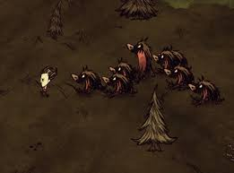
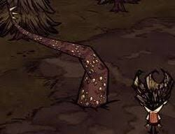
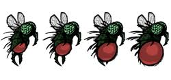
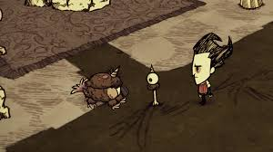
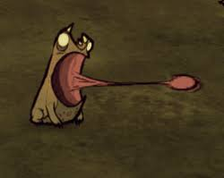

Don't Starve Together: Common Mobs
I will not be able to show all the mobs in the game but i can share a few notiable mobs!
Spider
The Creeping Arachnid
Spiders are common enemies that spawn in spider dens. They can be aggressive when near the player and other spiders will the player once a player attack it's kind, but can be managed with traps or an weapons.
Tallbird
The Angry Bird

Tallbirds are territorial enemies that will attack if their nests are disturbed. They have high health and can be tricky to defeat without the right strategy.
Hound
The Wild Hunter
Hounds are aggressive creatures that will attack in packs every 7-9 days. They are fast and dangerous, often appearing during hound waves. Be prepared for a fight when you hear their howls as they come in fire and ice varients if you live long enough!
Beefalo
The Cuddly Giant

Beefalo are typically peaceful but can become aggressive if provoked or when in mating season. They are commonly found in the grassy plains and can be useful for resources like beefalo wool and meat.
Tentacle
The Swampy Menace
Tentacles lurk in swampy areas and are dangerous enemies. They can attack from a distance with their long reach and have a very high damage output. They tend to sneak attack the player if they stand on them by accident.
Mosquito
The Bloodsucker
Mosquitoes are small, fast enemies that deal damage by draining the player's health. They tend to appear in swamp areas and can be a nuisance when swarming in large numbers but not particulaly dangerous.
Chester
The Strange Companion
Chester, though a helpful companion and is very helpful early on in the game where you would have to explore to make your base. He can be found as a mobile storage unit and will follow the player around once you find his "eye bone".
Frog
The Jumping Menace
Frogs are small but very hostile enemies that often attack in groups. These frogs spawn from ponds or have a chance to spawn in droves when it rains in spring. They are known for their tongue attacks and can steal items from players, so keep an eye on your resources.
Rock Lobster
The Crustacean Menace

Rock Lobsters are found in rocky terrain and are aggressive when disturbed. They can be tamed to help fight other enemies, but be cautious as they can deal significant damage when provoked.